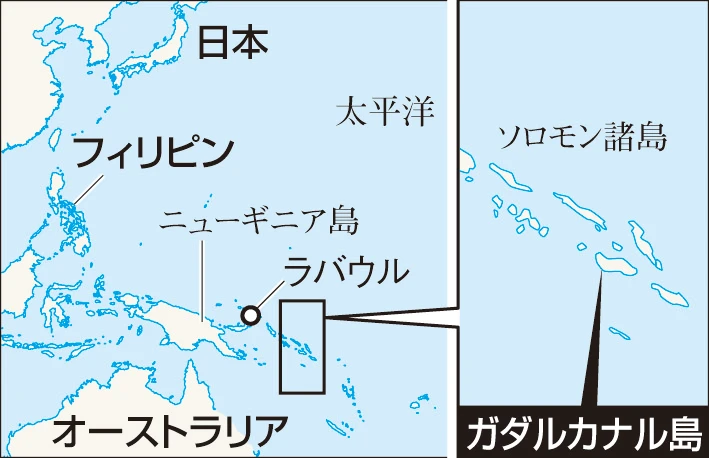

日中戦争が泥沼化し重苦しい世相が続くなか、昭和十六年にはついに太平洋戦争となった。 戦場が国外であったのでさほど身近かには感じなかった。 「ぜいたくは敵」「ほしがりません勝つまでは」のスローガンの下、きびしいい燈火管制、そして食料事情も厳しくなった。 ガダルカナル島を巡って日本とアメリカとの激しい攻防戦が続いた頃、大本営発表は常に景気よい軍艦マーチに始り我軍は赫々(かっかく)たる武勲をたて戦況は有利に展開していると報じていた。 「祝出征』」ののぼりを立てて町の人達が総出で送る出征風景、門柱に英霊の家・軍神の家と書いた張り紙のある家も見られるようになった。 主人には召集令状がこなかったが、後で思えば満州国の仕事に直接関係していたからと思います。
昭和十六年には将校だった義弟が神戸で召集され、東京の通信学校に配属された後、広島からフリッピン・スマトラと転戦し激戦の後ガダルカナル島で遂に戦病死との公報で残念無念、妹は残された幼き二人の子供とどんなに苦労した事でしょうか。
私どもの住居は下北沢駅より東方、田園が広がり近くには小川があり桜の並木が続くのどかな所でした。 十九年に入るとサイパン島が落ち、Bー29がこの郊外にも一機二機と来る様になり一応何ごともなく去っていましたが、高射砲の地響きで怖くなりました。 都内では爆弾・焼棒弾が落ち大変な被害があったとの事、いよいよ本土決戦との噂で緊張した生活が続き、昼は女だけの防空訓練と食事の心配に明け暮れしていました。 家でも庭に防空壕を掘り、サイレンが鳴ると子供達と壕に入り爆弾を落されないように念じながら解除になるのを待ちました。 その内にBー29が毎日来て焼夷弾を落すようになり、隣組でも一軒・二軒と疎開されたが、私どもは長崎出身でかえって危ないとのことで此処で頑張らなくてはと覚悟を決めました。 小学校三年生の長女は学童疎開する事になりお友達四十人位と長野へ嬉々として出発しました。 一週間も経たないうちに帰りたい、早く面会に来る様にとの便りで無理をして主人と交替で面会に、初めのうちは皆さんへの土産にお菓子もありましたが後では煎大豆がやっとでした。 それでも喜んでもらいました。
一方沖縄本島に米軍が上陸し激戦の末守備隊は全減、島民・学生が応戦し壕と共に玉砕するすざまじい様子が伝えられました。 今では「健児の塔」「ひめゆりの塔」と観光の場所となり語り継がれています。 鹿児島の特攻基地から毎日のように行きだけの燃料を積んだ特攻機が敵艦に体当たりする痛ましい事もありました。
三月二十日は東京大空襲で都内の大半が消失、死者数十万と報じられていた。 ここ郊外でも夕方より翌朝迄空襲警報が鳴りやまず不安な一夜を明かす毎日でしたが、八月六日には広島、九日には長崎に原子爆弾が落とされ、その悲惨さは筆舌には語り尽くせないものだったようです。 毎日の空襲で精神的にも体力的にも参っていました。
八月十五日、ラジオで玉音放送があると報じられておりました。 そして当日天皇陸下御自身の終戦のお言葉を拝聴して皆さんと感涙にむせびました。 敵機の影のない空、電灯を覆っていた黒布を除き明るい部屋にもどれることは、何物にも代え難い喜びでした。 今日では大戦の敗北から立上がり驚異的な経済成長を遂げていますが、戦争は絶対にしてはならないと声を大にして次の世代に伝えたいと思います。 (大・四年生)
ガダルカナル島
日本軍は1942年8月から43年2月にかけ、南太平洋のソロモン諸島・ガダルカナル島で米軍と戦った。
ガダルカナル島に飛行場を建設し、基地航空部隊を進出させて米国とオーストラリアの分断を目指す作戦だった。
日本軍は半年で、約2万2千人の戦死者・餓死者を出し、戦局の悪化が動かしがたい流れになった。
日本軍の一連の動きについて「米国との国力差と、その能力を十分に理解していませんでした。作戦の見通しも、開戦以来の勝利に対するおごりや、楽観的な認識に基づいていて、結果として、作戦自体がずさんでした」と語る。引用: 朝日新聞 GLOBE＋ガダルカナルの大失敗、元自衛隊幹部が読み解いたら 80年後の私たちが学べること